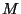
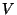

This paper is also available in postscript form.
Doug Orleans and Karl Lieberherr
Northeastern University, Boston, MA 02115, USA
(This paper has been submitted to the Reflection 2001 conference. It is also available as Northeastern University Tech Report NU-CCS-2001-02.)
The Law of Demeter [16] is a style rule for OOP whose goal is to reduce the behavioral dependencies between classes. Its primary form says that a method  should only call methods (and access fields) on objects which are preferred suppliers: immediate parts on this, objects passed as arguments to , objects which are created directly in , and objects in global variables (in Java, public static fields). Limiting which methods can call which other methods keeps programmers from encoding too much information about the object model into a method, thus loosening the coupling between the structure concern and the behavior concern.
The drawback of following the Law of Demeter is that it can result in a large number of small methods scattered throughout the program, which can make it hard to understand the high-level picture of what a program does. [23] studied three medium-sized object-oriented systems and found that in all three systems, 50% of the methods were less than 2 C++ statements or 4 Smalltalk lines long. The example in the next section also demonstrates this effect. The DemeterJ [17] [21] software allows the programmer to succinctly specify a traversal strategy [18] in place of the many methods that would be needed to traverse a complex object structure. These traversal methods are automatically generated at compile-time by a preprocessor. A traversal strategy describes a traversal at a high level, only referring to the minimal number of classes in the program's object model: the root of the traversal, the target classes, and waypoints and constraints in between to restrict the traversal to follow only the desired set of paths. If the object model changes, often the traversal strategy doesn't need to be changed; the traversal methods can simply be re-generated in accordance with the new model, and the behavior adapts to the new structure. Programming with traversal strategies is thus known as adaptive programming [15].
With the addition of reflection to Java [8], it became possible to interpret a traversal strategy at runtime. DJ [19] is a pure-Java package that provides this capability. This makes it easier to add traversal strategies to a Java program, because there is no need to modify the compilation process to run the preprocessor or to convert the source code to the Demeter input language syntax. Instead traversal strategies can simply be expressed as Java strings in ordinary Java code, or even constructed dynamically from an external source not known at compile time.
The example domain for this paper will be that of processing XML Schema definitions [5]. A simple task that one might want to implement is checking a schema for undefined types. This task involves two traversals of the object structure representing the schema definition: one to collect all the types defined in the schema, and one to check each type reference to see if it's in the set of defined types. Figure 1 shows a UML class diagram that represents a small subset of the XML Schema definition language; figure 2 shows the Java code for these classes, along with the methods for these two traversals. The methods getDefinedTypeNames and getUndefinedTypeNames on class Schema are the public interfaces to the traversals, and the methods addDef and addUndef do the actual traversal, building up the sets of type names.
|
Note that the Law of Demeter is strictly followed: each method only refers to fields defined on the same class. However, the overall algorithm is lost in the noise of all the traversal methods. The actual functional behavior is split between the Schema and Attribute classes. Moreover, even though each method only refers to local fields, deciding whether to traverse a field requires knowledge of the overall class structure: for example, in SequenceGroup, the addDef method only needs to traverse the edecls field because an element declaration may include a type definition; if the object model were extended so that an attribute declaration could also include a type definition, the addDef method in ComplexType would have to be changed to traverse the adecls field, even though nothing about ComplexType itself changed.
Another way of implementing this example would be to use the Visitor design pattern [6], by creating two classes TypeDefVisitor and DeclVisitor, moving the traversal methods into visit methods on those classes, and making subclasses overriding visit(Attribute) to perform the behavior of checking for defined and undefined types. While this would eliminate the scattering of traversal methods across the class structure, the same set of traversal methods would need to be written, and they would still need to be modified when the object model changes.
DJ is a library of classes that make traversals like the previous example much easier to define, understand, and maintain. Figure 3 shows an alternate implementation of the Schema class that defines the two traversals succinctly using the ClassGraph and Visitor classes from the edu.neu.ccs.demeter.dj package.
|
A ClassGraph object is a simplified representation of a UML [2] class diagram; its nodes are types (classes and primitive types) and its edges are (uni-directional) associations and (bi-directional) generalizations. The default ClassGraph constructor builds a graph object using reflection from all the classes in the default package; a string containing a package name can be provided as a constructor argument to build a class graph from another package. The methods addPackage(String pkgname) and addClass(Class cl) can be used to add other packages and classes to a class graph object. A traversal is done by calling the traverse method on a ClassGraph object. It takes three arguments: the root of the object structure to be traversed; a string specifying the traversal strategy to be used; and an adaptive visitor object describing what to do at points in the traversal.
A traversal strategy specifies the end points of the traversal, using the from keyword for the source and the to keyword for the target(s). In between, any number of constraints can be specified with via or bypassing. The two traversals in figure 3 traverse from Schema to Attribute; in other words, they visit attributes in a schema, because type names appear in attribute values for both definitions and references. They differ in their constraints: to find the names of types defined by the schema, the first traversal only looks at attributes of type definitions (TypeDef objects); to find the names of types referenced by the schema, the second traversal only looks at attributes of declarations (Decl objects). The ->TypeDef,attrs,* syntax is a pattern specifying the set of association edges whose source is class TypeDef and whose label (field name) is attrs; the asterisk means that an edge in the set can have any target type.
Traversal strategy interpretation is done as described in [18], with a few modifications whose details will be presented in a future paper. The general idea is that at each object in the traversal, those associations (including inherited associations) which can possibly lead to a target object (subject to any constraints specified in the traversal strategy) are traversed sequentially; if an object is encountered which has no possible path leading to a target object, the traversal returns to the previous step in the traversal. For example, in our XML Schema example, the items field of Schema contains an array of SchemaItem objects; this array may contain TypeDef objects, since TypeDef is a subclass of SchemaItem, so the elements of the array are traversed as part of the getDefinedTypes traversal. However, some of the elements may be AttributeDecl objects, and there is no possible path to a TypeDef object; if one of these elements is encountered in the array, it is simply skipped over. The adecls field of ComplexType is never traversed at all, since it can only contain an array of AttributeDecl objects. Note that if the adecls field were a Vector instead of an array, it could contain objects of any type, and so DJ would have to traverse it in case one of its elements were a TypeDef object or some other object that could lead to a TypeDef. If parameteric polymorphism is added to Java, such as that proposed in [3], this problem will be easier to avoid: the type of adecls could be List<AttributeDecl> and DJ would know it could avoid it.
An adaptive visitor class is a subtype of the Visitor class in the DJ package; it implements the Adaptive Visitor pattern described in [15, pp. 426-427]. The Adaptive Visitor pattern differs from the Visitor pattern as presented in [6] in two ways: only a minimal set of methods needs to be defined, namely those describing the functional behavior to be performed at points along the traversal, rather than one method each for every class in the traversal; and no accept methods need to be defined, nor does traversal behavior need to be defined in the visitor methods. These two differences result in a unit of behavior that can adapt both to changes in the object model and changes in the traversal.
During a traversal with adaptive visitor , when an object  of type
of type  is
reached in the traversal, if there is a method on named
before whose parameter is type
is
reached in the traversal, if there is a method on named
before whose parameter is type  , that method is called with
, that method is called with
 as the argument. Then, each field on the object is traversed if
needed. Finally, before returning to the previous object, if there is
a method on named after whose parameter is type
as the argument. Then, each field on the object is traversed if
needed. Finally, before returning to the previous object, if there is
a method on named after whose parameter is type  , that
method is called with
, that
method is called with  as the argument. The Visitor
subclasses defined inline in figure 3 only define one
before method each, which is executed at Attribute
objects, the end point of the traversal.
as the argument. The Visitor
subclasses defined inline in figure 3 only define one
before method each, which is executed at Attribute
objects, the end point of the traversal.
DJ also provides support for generic programming [20]: the asList method on ClassGraph adapts an object structure and a traversal strategy into a List, part of Java's Collections framework [9]. The object structure is viewed as a collection of objects whose type is the target of the traversal strategy; the collection's iterator performs the traversal incrementally with each call to next. Figure 4 shows how to rewrite the previous example using asList.
|
In this section we present some highlights of the implementation of DJ and some examples of interesting uses.
When the ClassGraph constructor is called, it creates a graph object containing reflective information about all the classes in a package. In Java, however, there is no way to get a list of all classes in a package; packages are just namespaces, not containers. Moreover, the JVM only knows about classes that have already been loaded, and it only loads classes when they are referenced. Since a class graph might be constructed before many of the classes in the package have been referenced, the constructor has to discover classes some other way: it searches the class path (provided by the JVM as System.getProperty("java.class.path")) for all .class files in subdirectories corresponding to the package name. For each class file that is found, it calls Class.forName() with the class name, which causes the JVM to load the class if it hasn't already been loaded. If there are classes that need to be added to a class graph that do not exist as .class files in the class path, for example if they are loaded from the network or constructed dynamically, they will need to be added explicitly by calling addClass().
A class graph may also be created from another class graph and a traversal strategy , forming the subgraph of classes and edges in that would be traversed according to . This can be used to remove unwanted paths from a class graph, such as backlinks, rather than having to add bypassing constraints to every traversal strategy.
The traverse method on ClassGraph is implemented in a two-stage process: first, a traversal graph is computed from the class graph and the traversal strategy (which itself is converted into a strategy graph, whose nodes are the classes mentioned in the traversal strategy and whose edges each have constraints attached to that leg of the traversal); then, the object structure is traversed, using information from the traversal graph to decide where to go next at each step, and visitor methods are invoked as needed. The traversal graph computation takes time proportional to the product of the number of edges in the class graph and the number of edges in the strategy graph; since the same traversal strategy is often reused multiple times with the same class graph, the traversal graph can be saved and reused without needing to be recomputed every time. The class TraversalGraph has a constructor that takes a traversal strategy and a ClassGraph object, as well as methods traverse and asList. The traversal computation algorithm is also available as a separate package, the AP Library [22].
At each step in a traversal, the fields and methods of the current object, as well as methods on the visitor object, are inspected and invoked by reflection. Some of this reflective overhead could be avoided by generating a new class (at run-time) that invokes the appropriate fields and methods directly; this is planned for a future addition to DJ. Other applications of partial evaluation to speed up the traversal may be possible as well.
The implementation of asList is somewhat trickier than regular traversal: the list iterator must return in the middle of the traversal whenever a target object is reached, and then resume where it left off when next is called again. An earlier version created an ad-hoc continuation-like object that was saved and restored at each iteration, but this was error-prone and not very efficient; the current version uses a separate Java thread as a coroutine, suspending and resuming at each iteration. An additional provided method gather can be used to copy all the target objects into an ArrayList, which is faster still, but the list returned by asList has the advantage that calls to set on the iterator can replace target objects in the original object structure.
Java's reflection system, unlike other meta-object protocols [11], has no mechanism for intercession: there is no way to make a new subclass of Class that behaves differently for certain meta-operations such as method invocation. However, DJ's Visitor class does allow a limited form of intercession. It has the method before(Object obj, Class cl) (and corresponding after), which is invoked by the ClassGraph.traverse method at each traversal step; it looks for a method named before with a single parameter whose type is the class represented by cl, and invokes it with obj as argument. This method can be overridden by a subclass to perform more dynamic behavior based on the reified class object of the object being traversed. Figure 5 shows a simple pretty-printing visitor that uses this technique, along with a method on class Schema that uses it.
|
Note that the XMLPrinter visitor class is generic, in that it makes no mention of any of the XML Schema classes but is parameterized by a mapping of classes to element names.
DJ is closely related to DemeterJ [21], a preprocessing tool that takes a class dictionary file (containing a textual representation of a UML class diagram, with syntax directives for parsing and printing object structures) and some behavior files (containing regular Java methods to be attached to the classes in the class dictionary, plus traversal method specifications, visitor methods, and adaptive methods that connect a traversal with a visitor class) and generates plain Java code for those classes with traversal methods attached (similar to the code in Figure 2) along with a parser and some custom visitors such as for printing, copying, or comparing object structures. DJ shares the same traversal strategy language and traversal graph algorithms as DemeterJ, but does no code generation and is a pure-Java library.
Besides being easier to use with existing Java code, DJ has a few other advantages compared to DemeterJ. One is the ability to traverse classes for which the programmer does not have source code, or is not able or willing to modify the source code; for example, one might traverse parts of Java's Swing library of GUI widgets. DJ can traverse public accessor methods, or may even use private methods and fields if the JVM's security manager allows reflective access to private parts (which is often the case outside of applets). Another feature of DJ which does not exist in DemeterJ is the ability to work with subgraphs of a class graph; in DemeterJ, all traversals are computed in the context of the whole class graph defined in the class dictionary, but in DJ you can create new class graphs by selecting a subgraph with a traversal strategy. In addition, DJ allows components to be more generic, by taking class graphs, traversal strategies, or classes to be visited as run-time parameters. These latter two advantages are due to the reification of concepts which only exist at compile-time in DemeterJ as first class objects in DJ.
An Adaptive Object-Model [24] is an object model that is interpreted at run-time. If an object model is changed, the system changes its behavior. Java's object model can't be changed at run-time (other than dynamic class loading) but DJ interprets the object model when doing traversals.
DJ's Visitor class is similar to the reflective visitor described in [1] and the Walkabout class described in [10]. However, neither of these allows for customized traversals.
Java OQL, is the binding of OQL (Object Query Language) from ODMG 2.0 [4] to Java, treats query specifications much like DJ treats traversal strategy specifications. An OQLQuery object can be constructed from a string describing a query; the query can then be executed by calling the execute() method on the OQLQuery object. Queries are either compiled dynamically at run-time or interpreted. An example of a query is:
OQLQuery query = new OQLQuery("select p.getSpouse from p in persons");
Set spouses = (Set) query.execute();
For an adaptive version of OQL, see [7].
DJ has some connections with aspect-oriented programming (AOP) [13]. An adaptive visitor is a specialized aspect: it says what behavior should happen at certain principled points in the execution of a traversal. A traversal strategy can also be considered an aspect: it adds crosscutting behavior whose implementation would ordinarily require scattering methods across the class structure. More details about the aspectual nature of DJ are in [14].
We have presented DJ, a pure-Java library supporting dynamic adaptive programming. DJ makes it easier to follow the Law of Demeter, loosening the coupling between the structure and behavior concerns and adapting to changes in the object model. It is more flexible and dynamic than the preprocessing approach taken by DemeterJ, by interpreting traversal strategies at run-time and using reflection to traverse object structures with adaptive visitors.
The Demeter team is currently working on a number of enhancements to DJ. One is the ability to write visitor methods that get executed whenever certain edges in the class graph are executed (currently, visitor method execution depends only on the class of the object being traversed). Another is the ability to write around methods on visitors that are executed in place of a traversal step and get passed a thunk that can be executed to continue the traversal. Both of these enhancements would allow visitors to have more control over the behavior that gets executed during a traversal.
AspectJ [12], an implementation of AOP for Java, makes available to advice an object that represents the current join point with information such as the current type and the control-flow history of past join points. A similar object could be added to DJ that would be passed to visitor methods so that they could access the history of objects being traversed, in order to carry information from one point of the traversal to others.
There are many optimizations that could be made to traversal interpretation. Currently fields and methods in the object structure and methods on visitors are looked up using reflection every time they are traversed; this information could be cached after the first lookup. Some of the reflection could be avoided altogether by generating a new class at run-time that hard-coded the field accesses and method executions involved in a traversal; although generating a class would be a one-time performance hit, overall performance would be much better if the same visitor and traversal strategy were used together multiple times.
There is room for improvement in the capability for manipulating class graph objects, such as being able to selectively remove edges or recognizing special kinds of accessor methods such as a getFoo(int i) method that retrieved the ith member of a collection of Foo objects. Also, the ability to join, merge, or intersect multiple traversal strategies would help make traversal strategies more reusable.
Josh Marshall designed and implemented the early versions of DJ. Johan Ovlinger designed and implemented the predecessor to DJ, TAO (Traversals As Objects), and suggested the run-time generation of a class to avoid reflective overhead. Pengcheng Wu is implementing several enhancements to DJ, including around visitor methods and visitor methods on edges. Thanks to Lars Hansen for suggesting the use of threads as coroutines for the asList iterator. The XML Schema example is a simplified version of an XML-Schema-to-Java tool being developed by Adak Prasenjit.
This document was generated using the LaTeX2HTML translator Version 99.2beta8 (1.42)
Copyright © 1993, 1994, 1995, 1996,
Nikos Drakos,
Computer Based Learning Unit, University of Leeds.
Copyright © 1997, 1998, 1999,
Ross Moore,
Mathematics Department, Macquarie University, Sydney.
The command line arguments were:
latex2html -split 0 -no_navigation -show_section_numbers dj
The translation was initiated by Doug Orleans on 2001-03-15